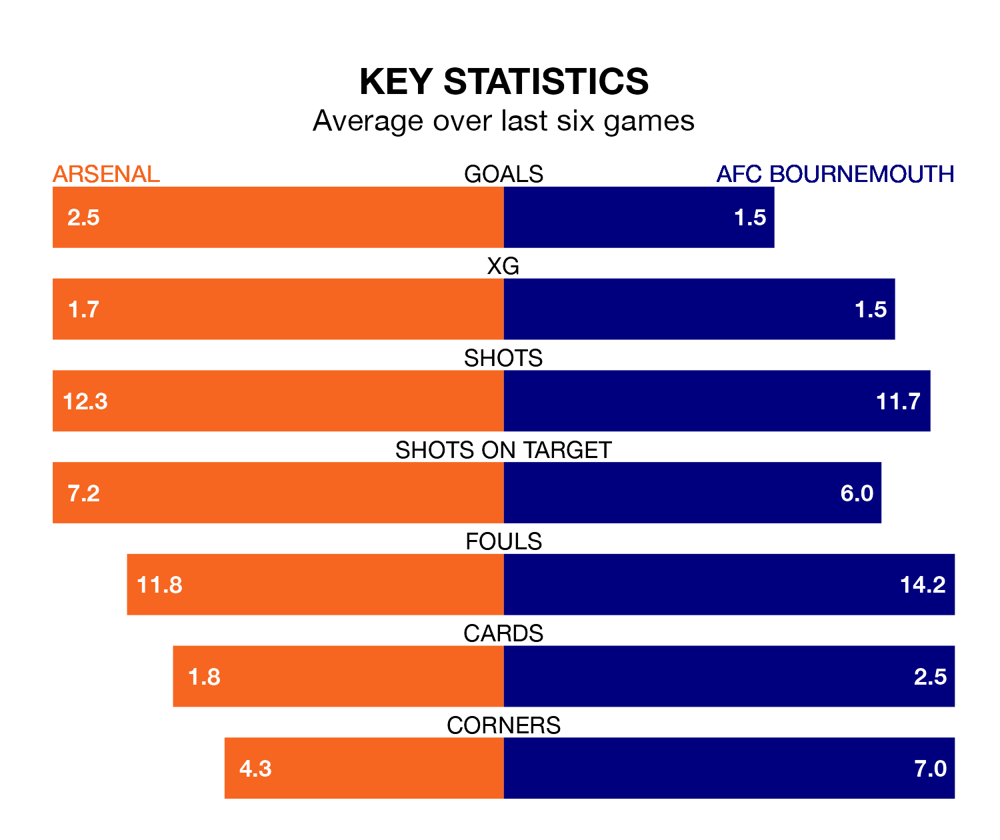

Arsenal are heavy favourites to keep all three points at home in Saturday lunchtime's kick-off against AFC Bournemouth.
The Gunners, who sit top of the Premier League with 35 games played, are priced at 1.2 to seal victory at the Emirates Stadium.
Sitting nine places and 32 points behind them in the table, Bournemouth are 11.0 to win with *Betting Company*, while the draw is at 7.0.
With 85 goals in 35 games so far this season, Arsenal are the league's highest scorers with 2.4 goals per game. And they are conceding fewer than average, letting in 28 goals at a rate of 0.8 per game.
Bournemouth, meanwhile, are below average scorers, with 1.5 goals per game, compared to a league average of 1.6. They have conceded 1.7 goals per game.
In David Raya, the Gunners can rely on one of the league's safest pair of hands. He has kept 14 clean sheets in his 29 appearances this season, and no 'keeper has prevented the opposition scoring more often in the Premier League.
In the Cherries's net, Norberto Neto has seven clean sheets in 31 games. He has conceded a goal every 61 minutes, 90% more often than the 113 minutes between goals for Raya Martin.
In the last 10 years, Arsenal and Bournemouth have played each other on 14 occasions. Arsenal won 11 of them, Bournemouth one, and they drew twice.
On average, the Gunners scored 2.5 goals and the Cherries 0.9 in those matches.
Their last meeting was on September 30, when Arsenal won 4-0 away.
The hosts are in fantastic form in the Premier League, with five wins and one loss from their last six games.
With three wins and a draw over that period, the away side's form is worse – they have taken 10 points from 18, compared to Arsenal's 15.
Arsenal's last match was on Sunday, a 3-2 win against Tottenham Hotspur, with Bukayo Saka, Kai Havertz and Pierre-Emile Højbjerg (own goal) getting the goals for the Gunners.
Bournemouth beat Brighton and Hove Albion 3-0 last time out, also on Sunday, with Enes Ünal, Justin Kluivert and Marcos Senesi on the scoresheet.
Updated: 10:44 (UTC), 30/04/24